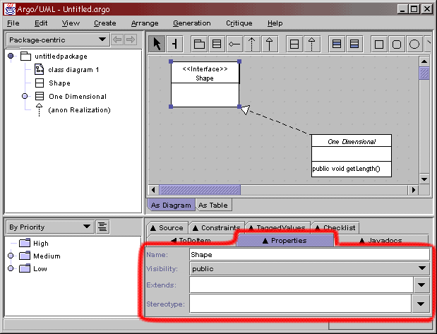

How To Make A PropertyPanelFor every figure that you create, there must be a property panel associated with it. The property panels are located in the Details pane of the Argo/UML window, under the Properties tab. Here we are going to continue from the example about making a new figure, but this time we will be implementing the property panel for this new figure called Interface. As with making a new figure, it is good to find a property panel that has already been implemented and is similar to the one you want to make, and then model the new class after the previous one. |
|
Ingredients Files you will need to create:
Directions PropPanelInterface This will be the only file that you will create/modify. Now, it is very important to stick with the naming scheme that has been setup. If the name of your new figure is Interface, the the name of its property panel file must be PropPanelInterface. This is because the code finds the correct property panel according to the name of the figure. Just make the appropriate modifications to this PropPanelInterface, and you will be finished.
Results The final result should look like the below. Note that the Properties panel will only show whan an Interface is selected inside the Editor pane. |

Contact
Please send comments and questions to: Jason Robbins
Back to Argo/UML Home